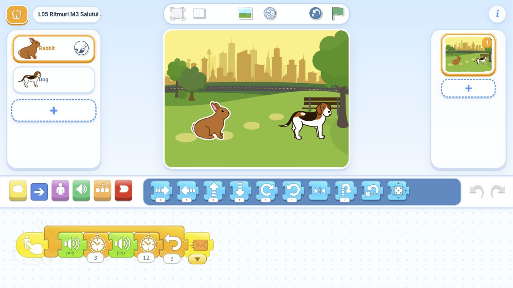

Codul secret
Două apropiate, pauză lungă, unul. Exact trei Pop.
Construim coduri sonore cu Pop, pauze, Repeat și mesaje. Numărăm ce se aude și alegem ce se repetă. Folosim Rabbit, Dog și Park din biblioteca aplicației, fără înregistrări, importuri sau descărcări pe tabletele copiilor.
Două apropiate, pauză lungă, unul. Exact trei Pop.
Fiecare are patru sunete. Ritmurile se deosebesc prin pauze.
6 Pop de la iepure + 1 Pop de la câine. Mesajul vine după Repeat.
6-8 și 8-10 minute suplimentare; păstrăm provocarea dificilă, pauza și salvarea.
Același ritm de trei sunete se aude de două ori, fără suprapunere.
Șapte sunete auzite. Numai două blocuri Pop în program.
Înregistrări din browser, pentru pregătirea profesorului. Nu trebuie instalate sau importate pe tablete.
Codul secret: două apropiate, pauză lungă, unul.
Salutul dificil: trei perechi și un răspuns, șapte sunete.
